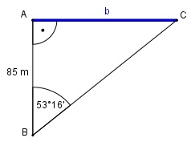

Aufgabe 93 Wie breit ist ein Fluss, an dessen Ufer Vermesser eine Standlinie AB von 85 m Länge abgesteckt haben und ein Punkt C, der A genau gegenüber- liegt, von B aus unter einem Winkel von 53°16' angepeilt wird?

16 16’ = ----° = 0,2667° 60 Im Dreieck ABC: b tan 53,2667° = ------- |*85 m 85 m b = 85 m * tan 53,2667° = 85 m * 1,34 = 113,9 m